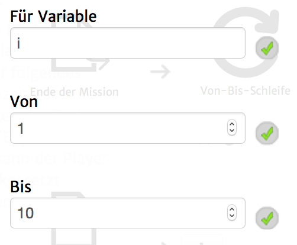

Mit Hilfe dieses Aktionstyps lassen sich bestimmte Aktionen solange ausühren, wie es dauert eine Variable hochzuzählen. In der Informatik würde man von einer "For"-Schleife sprechen.
Diese Aktion besteht aus zwei Hauptkomponenten, nämlich der Bedingungsdefinition (Für i, Von, Bis) und einer Liste von Aktionen (Dann).
Achtung! Aktuell kannst du die Ausführung der Schleife nicht ändern, indem du die angegebene Variable während der Dann-Aktionen veränderst.
Dementsprechend kann diese Aktion aktuell nur dazu benutzt werden, Aktionen genau x-mal auszuführen.

Die Schwierigkeit, diese Aktion richtig einzusetzen, liegt hauptsächlich in ersterer Komponente - dem Von-Bis.
Diese Schleife beginnt immer mit der Variablendefinition:
"Für Variable" = "Von" (in diesem Fall i = 1).
Danach werden die Aktionen aus "Dann" ausgeführt und schließlich i um eins erhöht. Das passiert automatisch wenn alle Dann-Bedinugngen abgearbeitet sind.
Die Schleife ist beendet wenn die "Für Variable" größer als Dann ist, d.h. die Ausführung der Schleife ist "inklusive"
der Bis-Zahl.